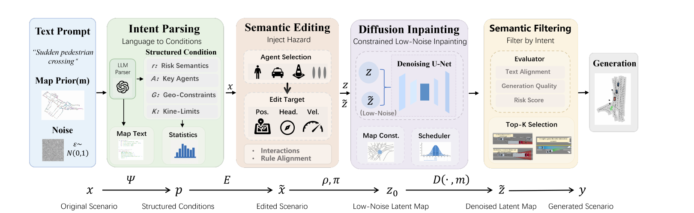

Intent parsing
Produces scenario type, risk semantics, key agents, geometric relations, and severity.
Controllable hazard injection with constraint-preserving diffusion inpainting for closed-loop safety evaluation.
Chongqing University of Posts and Telecommunications · Nanjing University of Aeronautics and Astronautics · Tongji University
Real-world driving logs undersample the interactions that matter most for safety. NLG-Gen converts language into executable spatial and kinematic constraints, writes the requested hazard into a structured scenario, and uses diffusion as a local realism restorer under semantic protection.
The pipeline separates semantic correctness from generative realism instead of asking one soft conditioning signal to solve both.

Natural-language intent parsing, vector-space hazard injection, constraint-preserving diffusion inpainting, and semantic candidate selection.
Produces scenario type, risk semantics, key agents, geometric relations, and severity.
Injects explicit pedestrian-crossing, hard-brake, or cut-in conflicts in vector space.
Uses differential and semantic ROI masks with low-noise latent restoration.
Ranks candidates by semantic alignment, compliance, and preservation fidelity.
| Scenario | MPA ↑ | CR ↑ | SQS ↑ | DRL ↑ |
|---|---|---|---|---|
| Pedestrian crossing | 92.66 | 100 | 75.51 | 35.98 m |
| Hard braking | 86.93 | 100 | 73.64 | 40.09 m |
| Forced cut-in | 83.48 | 100 | 75.57 | 43.57 m |
All three closed-loop planners degrade sharply on the generated set relative to the official nuPlan validation split.
| Planner | nuPlan score ↑ | NLG-Gen score ↑ | Collision-free ↑ | TTC ↑ |
|---|---|---|---|---|
| PDM-Closed | 97.61 | 27.86 | 88.75 | 76.50 |
| Diffusion Planner | 95.70 | 18.59 | 69.78 | 63.45 |
| Flow Planner | 97.13 | 10.05 | 58.81 | 51.86 |
@article{lei2026nlggen,
title = {NLG-Gen: Natural Language-Guided Generation of Long-Tail Critical Scenarios for Autonomous Driving},
author = {Lei, Tingting and Zhu, Yifan and Zhang, Runxi and Hu, Feng and Yu, Hong and Wang, Ye},
year = {2026}
}